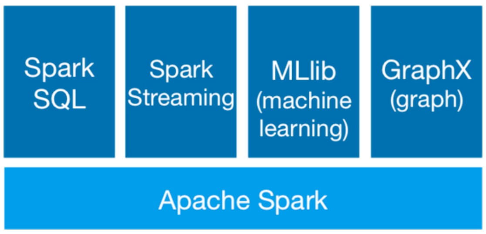
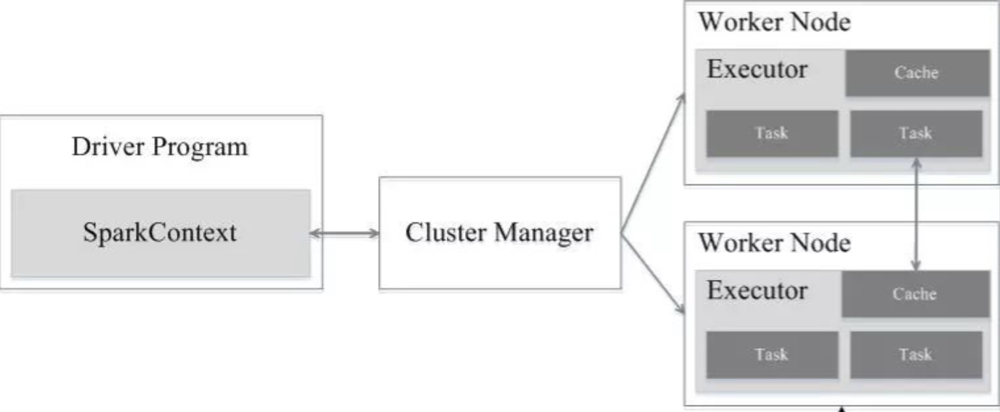
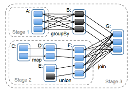
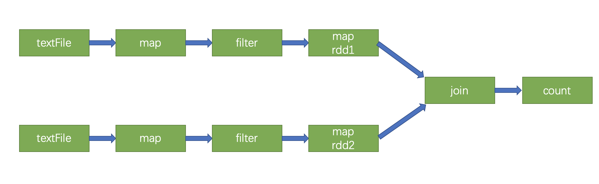
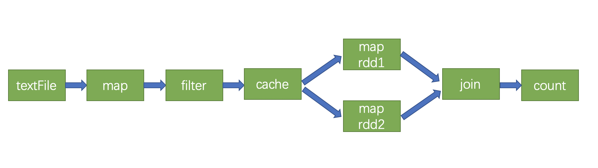

Spark是使用Scala实现的基于内存计算的大数据开源集群计算环境. 提供了 Java, Scala, Python, R等语言的调用接口.
本篇主要介绍Spark的基本原理, 以及安装流程.
Spark简介
Spark在英文中的意思, 为火花, 其中有”快”的含义, 而事实上在数据处理上, Spark也确实比基于MapReduce的Hadoop要快很多.
那么, 为什么会快呢? 是因为Hadoop在一次MapReduce运算之后, 会将数据的运算结果从内存写入到磁盘中, 第二次MapReduce运算时在从磁盘中读取数据, 所以其瓶颈在运算间的多余 IO 消耗. 而Spark则是将数据一直缓存在内存中, 直到计算得到最后的结果, 再将结果写入到磁盘, 所以多次运算的情况下, Spark是比较快的.
Spark由伯克利大学研发, 在核心框架 Spark 的基础上, 主要提供四个范畴的计算框架:
Spark SQL:
提供了类 SQL 的查询, 返回 Spark-DataFrame 的数据结构(类似 Hive).
Spark Streaming:
流式计算,主要用于处理线上实时时序数据(类似 storm).
MLlib:
提供机器学习的各种模型和调优.
GraphX:
提供基于图的算法, 如PageRank.

在Spark中, RDD(Resilent Distributed Datasets), 俗称弹性分布式数据集, 是 Spark 底层的分布式存储的数据结构, 可以说是 Spark 的核心, Spark API 的所有操作都是基于 RDD 的. 数据不只存储在一台机器上, 而是分布在多台机器上, 实现数据计算的并行化. 弹性的意思是数据丢失时, 可以进行重建. 在Spark 1.5版以后, 新增了数据结构 Spark-DataFrame, 仿造的 R 和Python 的类 SQL 结构DataFrame, 底层为 RDD, 能够让数据从业人员更好的操作 RDD.
RDD中记录了通过哪些操作得到的, 这些操作形成一个有向无环图 DAG(Directed Acyclic Graph),反映RDD之间的依赖关系. 整个计算过程中, 将不需要将中间结果落地到磁盘进行容错, 假如某个节点出错, 则只需要通过DAG关系重新计算即可.
Spark的架构如下, 其实感觉和Hadoop那里的YARN比较相似:

架构中的一些关键部分:
Application
用户编写的Spark应用程序, 一个Application包含多个Job.
Driver Program
控制程序, 负责为Application构建DAG图, 并且创建SparkContext.
Cluster Manager
集群资源管理中心, 负责分配计算资源. 可以是由Spark本身控制(Standalone模式), 或者YARN模式, Mesos模式.
Worker Node
工作节点, 负责完成具体计算.
Executor
是运行在工作节点 Worker Node 上的一个进程, 负责运行Task, 并为应用程序存储数据.
Job
作业, 一个Job包含多个RDD及作用于相应RDD上的各种操作.
Stage
阶段, 是Job的基本调度单位, 一个Job会分为多个子Job, 也就是Stage.
Task
任务, 每个Stage中包含一个或多个Task, 运行在Executor上的工作单元.
就是说, Spark的分布式计算架构, 在资源调配上, 其实与YARN比较相似, 所以用YARN作为其集群资源管理, 是自然的想法.
同时, 一个Application包含多个Job, 一个Job包含多个Stage, 一个Stage包含多个Task. 为什么会这样套娃呢? 首先一个Application包含多个Job好理解, 一个应用一般来说都是由一系列过程(函数)来完成的; 然后一个Job包含多个Stage, 这里的Stage的划分, 主要是根据Shuffle操作来定的, 关于Shuffle操作, 后文会再进行介绍; 接着一个Stage包含多个Task, 这里就是并行运算了, 可以简单理解为每次对一部分数据进行某个操作.
关于Spark的常见部署模式, 有单机模式和上面提到的三种模式, 这里主要介绍YARN模式. 此外, 还有client和cluster之分, 它们有什么区别呢?
我们知道, 当在YARN上运行Spark作业时, 每个Spark Executor对应一个YARN容器Container运行. YARN-cluster和YARN-client模式的区别其实就是Application Master进程的区别. 在YARN-cluster模式下, Driver运行在AM(Application Master)中, 它负责向YARN申请资源, 并监督作业的运行状况. 当用户提交了作业之后, 就可以关掉Client, 作业会继续在YARN上运行. 然而YARN-cluster模式不适合运行交互类型的作业. 在YARN-client模式下, Driver运行在Client端, Application Master仅仅向YARN请求Container, Client会和请求的Container通信来调度他们工作, 也就是说Client不能离开. 下面的图形象表示了两者的区别:


前面说到, Spark是根据Shuffle类算子来进行Stage的划分. 如果我们的代码中执行了某个Shuffle类算子(比如reduceByKey), 那么就会在该算子处, 划分出一个Stage界限来. 可以大致理解为, Shuffle算子执行之前的代码会被划分为一个Stage, Shuffle算子执行以及之后的代码会被划分为下一个Stage. 如下图:

因此一个Stage刚开始执行的时候, 它的每个Task可能都会从上一个Stage的Task所在的节点, 去通过网络传输拉取需要自己处理的所有key, 然后对拉取到的所有相同的key使用我们自己编写的算子函数执行聚合操作, 这个过程就是Shuffle. 正是因为在执行Shuffle操作时, 会涉及到数据传输, 中断原本单个Executor的任务, 所以以此划分Stage. 同时, Shuffle操作是比较耗费资源的, 所以在处理数据时, 要避免使用大量的Shuffle操作.
总结一下Spark的特点:
高效性.
不同于MapReduce将中间计算结果放入磁盘中, Spark采用内存存储中间计算结果, 减少了迭代运算的磁盘IO. 并通过并行计算DAG图的优化, 减少了不同任务之间的依赖, 降低了延迟等待时间.
易用性.
相比MapReduce仅支持Map和Reduce两种编程算子, Spark提供了超过80种不同的Transformation和Action算子, 并且采用函数式编程风格, 实现相同的功能需要的代码量极大缩小. 同时支持多种编程语言接口.
通用性.
Spark提供了统一的解决方案, Spark可以用于批处理, 交互式查询(Spark SQL), 实时流处理(Spark Streaming), 机器学习(Spark MLlib)和图计算(GraphX). 可以独立使用, 也可以与其它大数据平台(如Hadoop)搭配使用.
安装
在官网下载, 如果搭配Hadoop使用, 需要注意一下Spark的版本, 这里选择2.4.7版. 下载后解压放置到/usr/local/spark.
同时在官网下载2.11版本的Scala进行安装, 解压后放置到/usr/local/scala. 较新版的Spark内置了Scala, 所以其实不专门安装Scala也可以使用Spark.
配置环境变量.bashrc:
1 | # scala |
设置日志目录, 上传jar包.
1 | $ hadoop fs -mkdir /spark |
修改位于/usr/local/spark/conf的配置文件spark-env.sh. 这里主要针对使用YARN作为集群资源管理来进行配置.
1 | # 以YARN作为集群资源管理 |
修改spark-defaults.conf, 其中的配置为默认配置, 可以在提交任务时另行定义, 会覆盖这里的默认设置.
1 | spark.master yarn |
配置slaves, 因为是单机上模拟分布式运算, 所以只添加localhost.
安装Python包, 在使用Jupyter时需要.
1 | $ pip install -i https://pypi.tuna.tsinghua.edu.cn/simple/ pyspark==2.4.7 |
在配置得差不多以后, 可以尝试运行自带的小程序, 若出现错误, 则根据错误进行检查. 并且由于Hadoop和Spark都有start-all.sh这个命令, 所以在使用这个命令时最好到对应目录下运行, 或者分开启动各项组件.
1 | # 因为是基于YARN, 所以先开启Hadoop |
若运行成功, 则会在倒数几行中, 看到如下信息:
1 | Pi is roughly 3.144335144335144 |
使用
提交任务
总体说来, 有两种提交任务的方式, 一种是使用spark-submit命令, 如:
1 | $ cd $SPARK_HOME |
另一种方式, 是用过shell来进行交互, 使用PySpark的话, 可以使用命令行:
1 | $ cd $SPARK_HOME |
或者使用Jupyter, 然后加载pyspark包来进行交互.
参数设置
这里列举一些常用参数及其意义.
| 参数 | 描述 |
|---|---|
| —master | 指定运行模式. 可选spark://host:port, mesos://host:port, yarn, local等 |
| —deploy-mode | 可选client, cluster |
| —name | 应用程序的名称 |
| —conf | 指定的spark配置属性, 以—conf spark.xxx=xxx来进行配置 |
| —driver-cores | Driver的核数, 默认是1 |
| —driver-memory | Driver内存, 默认1G |
| —executor-core | 每个executor的核数 |
| —executor-memory | 每个executor的内存，默认是1G |
| —num-executors | 启动的executor数量, 默认为2 |
运行调优
在上文中提到编写Spark程序时, 要尽量避免Shuffle操作, 这其实就算一种调优, 此外想要让Spark程序更加顺畅地运行, 还有一些方法. 下面列举一些可以优化的地方.
Shuffle的优化.
举一个栗子, 下面两个操作从结果上来说是等价的:
1
2
3
4// 操作一
rdd.groupByKey().mapValues(_.sum)
// 操作二
rdd.reduceByKey(_ + _)但是操作一需要把全部的数据通过网络传递一遍, 而操作二根据每个 key 局部的 partition 累积结果, 在 shuffle 的之后把局部的累积值相加后得到结果, 更加高效.
更多的优化方法, 需要实践以及对Spark的深刻理解, 这里不做深入讲解.
缓存优化.
Spark中对于一个RDD执行多次算子(函数操作)的默认原理是这样的: 每次你对一个RDD执行一个算子操作时, 都会重新从源头处计算一遍, 计算出那个RDD来, 然后再对这个RDD执行你的算子操作. 这种方式的性能是很差的. 因此对于这种情况, 建议是对多次使用的RDD进行持久化.
举一个栗子:
1
2
3
4
5val rdd = sc.textFile("file_path").Map(...).filter(...)
val rdd1 = rdd.Map(...)
val rdd2 = rdd.Map(...)
val rdd3 = rdd1.join(rdd2)
rdd3.count()对应的DAG图为:

而如果对RDD使用
cache函数进行缓存, 就不用再从头计算了.1
2
3
4
5val rdd = sc.textFile("file_path").Map(...).filter(...).cache()
val rdd1 = rdd.Map(...)
val rdd2 = rdd.Map(...)
val rdd3 = rdd1.join(rdd2)
rdd3.count()对应的DAG图为:

此外要认识到:
cache的RDD会一直占用内存, 当后期不需要再依赖时, 可以使用unpersist释放掉.参数优化.
根据可用的计算资源和处理问题的规模, 设定合适的参数, 可以在充分利用资源的同时, 加速计算的流程.
num-executors
默认的数量是很少的, 一般较大的任务可以设置几十个或者上百个的Executor. 设置太少无法利用集群资源, 设置太多可能出现闲置Executor的情况.
executor-memory
单个Executor如果太小, 则容易出现OOM, 设置大一些如4G~8G比较合适. 一般num-executors乘以executor-memory为总共申请的内存资源, 这个资源最好不要超过最大内存的1/3~1/2, 否则可能导致其他同学的程序无法正常运行.
executor-core
CPU核心的数量决定了Executor并行执行Task的能力, 一般设置为2~4个较为合适. 同样的, num-executors乘以executor-core为总共申请的CPU资源, 最好也不要超过CPU核数的1/3~1/2.
driver-memory
一般来说Driver不需要太大内存, 1G就够了. 但是如果需要使用
collect算子将数据拉到Driver上处理, 那么需要将内存设置大一些, 以免出现OOM的问题.